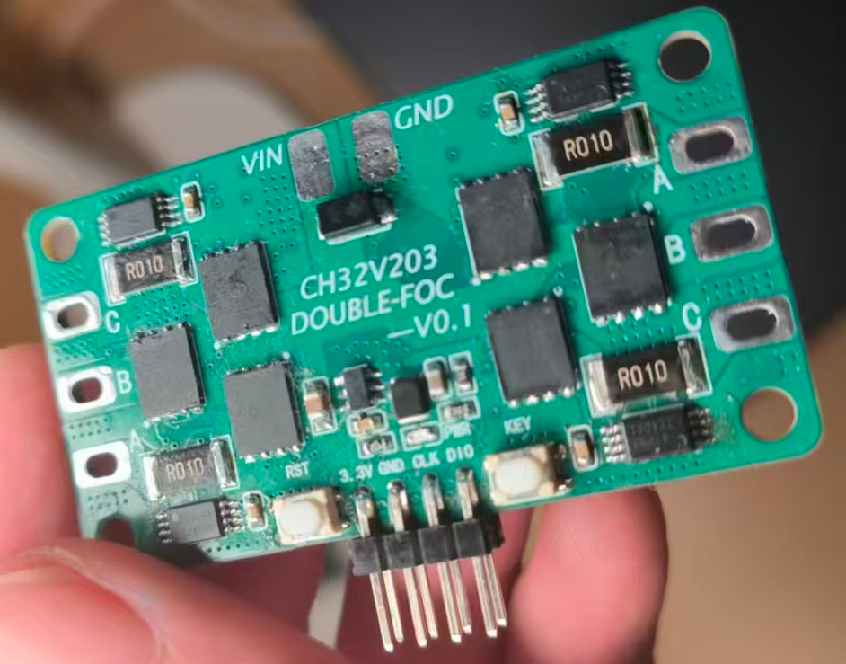
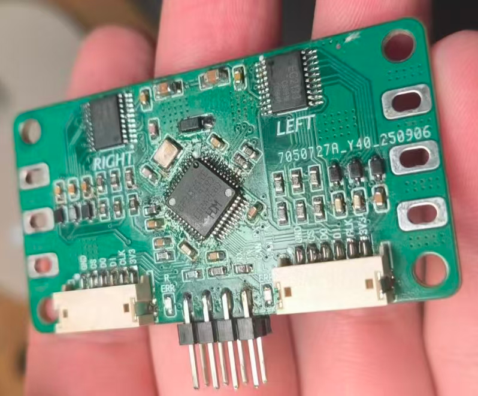
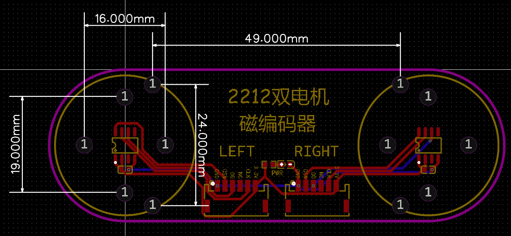
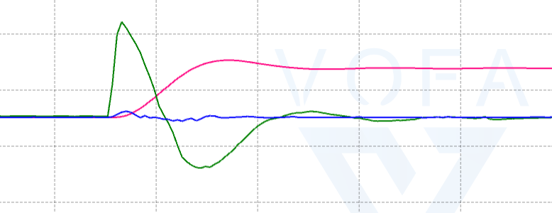

CH32V203 DOUBLE-FOC
双路磁编码器 FOC 电机驱动
项目概述
这是一个覆盖电路设计、PCB、底层驱动与控制算法的双路无刷电机驱动项目。以 CH32V203 为主控，将磁编码器反馈、电流采样、FOC 运算、PWM 输出和串口调试整合到同一套嵌入式系统中。
系统面向新西达 A2212 电机，支持两路电机独立使能，以及速度、位置、电流和多种串级闭环控制。仓库同时提供 MounRiver Studio 固件工程、硬件原理图与 PCB 文件。
硬件设计


| 模块 | 方案与参数 |
|---|---|
| 主控 | CH32V203；采用 RISC-V 核心及 CH32V20x 外设库。 |
| 位置反馈 | MT6701 磁编码器，固件按 14 位角度计数处理，一圈为 0–16383。 |
| 栅极与功率级 | EG2133 栅极驱动搭配双 N 沟道 MOS 器件，每路使用 3 个双管封装。 |
| 电流采样 | 固件配置 A/C 两相电流采样，分流电阻 0.01 Ω、放大增益 20。 |
| 供电设计 | 额定设计电压 12 V；README 标注输入电压范围为 4.5–17 V。 |
选择 EG2133 的设计出发点是使用普通定时器的 3PWM 信号驱动桥臂，减少对高级定时器互补输出和引脚数量的需求。双管封装降低了焊接数量，但紧凑布局也带来了后续硬件调试问题。

控制模式与固件架构
固件提供开环、速度环、角度环、角度–速度串级环，以及电流环、速度–电流环、角度–电流环和角度–速度–电流三环。调制方式包括 SPWM、七段式 SVPWM 和五段式 SVPWM；当前配置选择速度–电流模式与七段式 SVPWM。
driver_config.h 将 FOC 控制基准频率配置为 20 kHz，速度环为 2 kHz，角度环为 500 Hz。这些是固件配置值，并非本页面额外测量的性能结果。
Hardware/ ADC · GPIO · PWM · USART · MT6701
Software/ FOC · PID · motor_control · motor_uart
User/ main · interrupt handlers
Double_FOC.wvproj MounRiver Studio外围驱动负责采样与输出，控制层完成角度与速度反馈、坐标变换和 PID 调节，协议层将串口目标值转换为对应模式下的电机指令。
串口控制与数据可视化
串口采用 460800 baud、8-N-1。控制帧固定为 6 字节：帧头 0xA5、左电机目标值 2 字节、右电机目标值 2 字节、1 字节校验和。目标值按有符号 16 位整数解释，高字节在前。
A5 03 E8 FC 18 A4在速度模式中，上述指令表示左电机 +1000 RPM、右电机 −1000 RPM。校验和为前 5 字节求和后保留低 8 位；角度模式使用编码器计数，电流模式使用 mA，不能把不同模式的目标值混用。
状态回传为逗号分隔的 ASCII 数据，可按宏配置输出角度、速度、相电流、dq 电流和电池电压，配合 Vofa+ 观察调参过程。CAN 通信仍属于待扩展功能。

工程迭代与调试
仓库记录了数值运算、采样时序、PWM 更新和通信解析方面的排查与修正，目标是提升采样数据与控制链路的一致性。
- 修正有符号圆限幅、dq 电流归一化和 PI 积分小数截断问题，降低数值误差与正负方向不一致的影响。
- ADC 扫描完成后发布独立 DMA 快照，控制环使用已完成的采样结果；PWM 硬件同步仍待完善。
- PWM 比较值改为直接更新并启用三相预装载，使整组三相输出在后续更新事件统一生效。
- 修复串口负目标值解析、三环角度模式目标更新、速度方向定义和低速滤波精度问题。
当前进展与后续优化
README 记录左路电机运行正常，右路在较高占空比下仍可能导致主控复位或卡死。当前可通过降低占空比或仅使用左路开展调试，不能据此认定全部双路控制模式已完成硬件验证。
后续重点是优化 PCB 布局、功率器件与栅极驱动选型，继续改善采样和 FOC 执行效率，并补齐经过硬件验证的电压、电流、散热和接线资料。保护功能通过宏配置启停，具体启用状态以固件版本为准。
本页内容和实物图片整理自项目开源仓库；详细代码、配置与最新调试状态请参阅仓库。